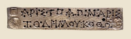

Kleisthenes introduces democracy to AthensIn 508 BC Kleisthenes introduced a number of changes to Athens. He organised society into ten groups called tribes. All participation in Athenian public life was arranged through these tribes. He also invented ostracism. Ostracism meant that if one person was becoming too powerful in the city, people could vote to have him banished for 10 years. 
Bronze juryman's ticket
|